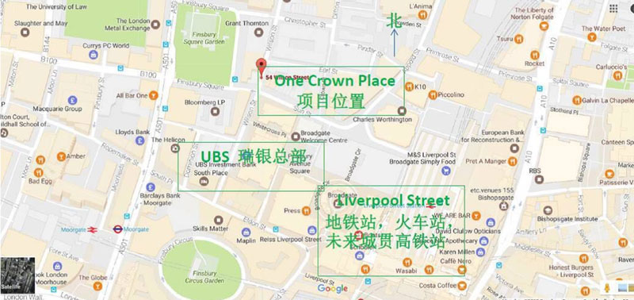
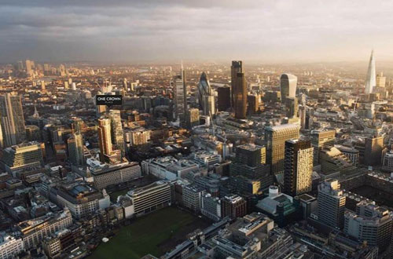
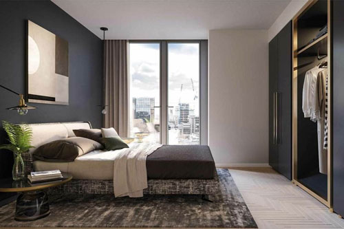
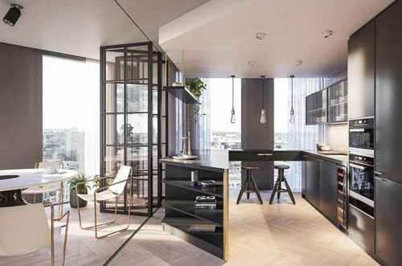
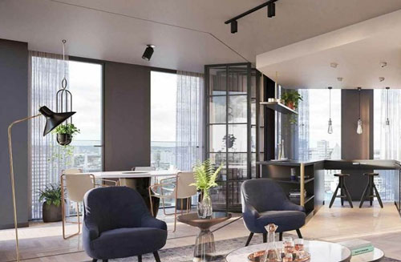

在寸土寸金的伦敦金融城，每天370,000 白领穿梭在各大银行，保险，及高新科技总部之间。这里拥有着高达47%的租户比例，位于全伦敦最高。
皇冠壹号占据独特的地理位置，接壤伦敦金融城（伦敦金融城内不允许建造住宅项目），正对瑞银UBS总部大楼，提供246套私人住户及高档社区配套设施，打造金融城时尚现代都市生活。
皇冠壹号占据独特的地理位置，接壤伦敦金融城（伦敦金融城内不允许建造住宅项目），正对瑞银UBS总部大楼，提供246套私人住户及高档社区配套设施，打造金融城时尚现代都市生活。

特点：
One Crown Plaza 地处伦敦金融城、科技城、市场媒体城，三城交汇区；
交通便捷：步行可至Liverpool street地铁站，六条地铁线、火车站以及即将于2018年开通的横贯城铁Cross Rail交汇在此；
总价760万人民币起，首付仅需10%，999年产权
预计于2020年8月完工。
One Crown Plaza 地处伦敦金融城、科技城、市场媒体城，三城交汇区；
交通便捷：步行可至Liverpool street地铁站，六条地铁线、火车站以及即将于2018年开通的横贯城铁Cross Rail交汇在此；
总价760万人民币起，首付仅需10%，999年产权
预计于2020年8月完工。
投资机会：
该区域是英国第二大写字楼市场，拥有多元化的就业市场，既是全球重量级金融中心，又是科技城所在地。
近年来，该地区雇主的增加和多样性极大地推动了餐饮行业，使更多人想在这里生活和工作，无论是业主还是租户。
教育—伦敦大多数顶尖大学都设在一区
本地劳动力—相当多元化，有很多高净值人士
本地零售和餐饮供应—邻近地块的Broadgate Circle 开业后，开始媲美伦敦西区（West End）
该区域是英国第二大写字楼市场，拥有多元化的就业市场，既是全球重量级金融中心，又是科技城所在地。
近年来，该地区雇主的增加和多样性极大地推动了餐饮行业，使更多人想在这里生活和工作，无论是业主还是租户。
教育—伦敦大多数顶尖大学都设在一区
本地劳动力—相当多元化，有很多高净值人士
本地零售和餐饮供应—邻近地块的Broadgate Circle 开业后，开始媲美伦敦西区（West End）
详情咨询：
T 86 21 2401 1338
F 86 21 5403 7430
M 86 185 166 306 39
